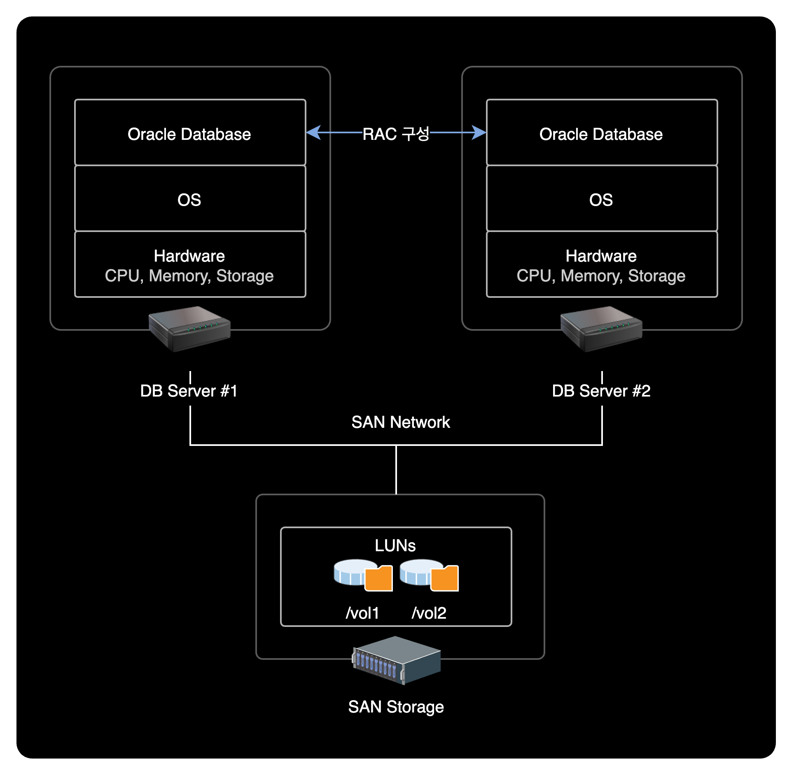

오라클 데이터 파일 옮기기
개요
파일시스템 용량이 부족한 상황을 해결하기 위해 테이블스페이스의 데이터 파일을 다른 파일시스템 경로로 이동시켜 Filesystem Full로 인한 서비스 장애를 방지할 수 있다.
문제점
/vol1파일시스템의 사용률이 90% 초과- Filesystem Full로 인한 서비스 장애 발생 가능성이 존재함
$ df -h
Filesystem Size Used Avail Use% Mounted on
/dev/sda5 63G 30G 30G 50% /
/dev/sda2 39G 14G 23G 38% /oracle
/dev/sda1 99M 12M 82M 13% /boot
tmpfs 32G 0 32G 0% /dev/shm
/dev/emcpowera 600G 538G 63G 90% /vol1
/dev/emcpowerb 600G 12G 589G 4% /vol2
해결방안
테이블스페이스의 데이터 파일을 여유공간이 있는 파일시스템으로 이동시킨 후 데이터 파일의 경로 설정을 변경한다.
환경
온프레미스 데이터센터 환경이며 시스템 구성은 다음과 같습니다.

- OS : Red Hat Enterprise Linux Server release 5.3 (Tikanga)
- Kernel : 2.6.18-128.el5
- ID : oracle
- Shell : bash
- Database
- Engine Version : Oracle Database 10g Enterprise Edition Release 10.2.0.4.0 - 64bit Production
- DB 이중화 : Oracle RAC(Real Application Clusters) 사용중
- DB 인스턴스 : DEV1, DEV2 총 2개 사용중
조치방법
1. DB 접속
oracle 계정으로 변경한 후, sqlplus 명령어를 실행해서 Oracle DB에 접속합니다.
# su - oracle
$ sqlplus / as sysdba
SQL*Plus: Release 10.2.0.4.0 - Production on Tue Sep 7 11:00:04 2021
Copyright (c) 1982, 2007, Oracle. All Rights Reserved.
Connected to:
Oracle Database 10g Enterprise Edition Release 10.2.0.4.0 - 64bit Production
With the Partitioning, Real Application Clusters, Data Mining and Real Application Testing options
2. 데이터파일 정보 확인
SQL 출력결과 사이즈 최적화
SQL> SET LINESIZE 200;
SQL> SET PAGESIZE 200;
SQL> COL FILE_NAME FOR A40;
SQL> COL TABLESPACE_NAME FOR A20;
테이블스페이스 데이터 파일 조회
DBA_DATA_FILES 데이터 사전에서 테이블스페이스의 데이터 파일 크기와 테이블스페이스 사이즈를 확인할 수 있습니다.
SQL> SELECT TABLESPACE_NAME, ROUND(BYTES/1024/1024/1024) AS GB, FILE_NAME FROM DBA_DATA_FILES WHERE FILE_NAME LIKE '%/vol1/DBF/%';
TABLESPACE_NAME GB FILE_NAME
-------------------- ---------- ----------------------------------------
TEST_TS 32 /vol1/DBF/TESTINFO3.DBF
TEST_TS 32 /vol1/DBF/TESTINFO4.DBF
TEST_TS 32 /vol1/DBF/TESTINFO5.DBF
TEST_TS 32 /vol1/DBF/TESTINFO6.DBF
데이터 파일 정보를 확인 후 exit 명령어로 sqlplus에서 빠져나온다.
SQL> exit
Disconnected from Oracle Database 10g Enterprise Edition Release 10.2.0.4.0 - 64bit Production
With the Partitioning, Real Application Clusters, Data Mining and Real Application Testing options
DBA_DATA_FILE 테이블
Oracle DB에서 DBA_DATA_FILES 테이블은 데이터 파일에 대한 정보를 제공하는 시스템 카탈로그 뷰입니다.
이 뷰는 데이터베이스에 존재하는 모든 데이터 파일에 대한 정보를 제공합니다. 이 정보에는 데이터 파일의 이름, 경로, 크기, 생성 일자, 상태 등이 포함됩니다. 또한 이 뷰를 사용하여 각 데이터 파일이 속한 테이블 스페이스 및 테이블 스페이스의 소유자도 확인할 수 있습니다.
DBA_DATA_FILES 뷰는 시스템 관리자 또는 데이터베이스 관리자(DBA)와 같은 권한을 가진 사용자만이 액세스할 수 있습니다. 이 뷰를 사용하면 데이터베이스의 저장 용량을 모니터링하고 데이터 파일의 생성, 확장, 축소 및 이동 등의 작업을 수행할 수 있습니다.
3. 데이터 파일 실제경로 확인
파일시스템 경로에 데이터 파일이 실제로 존재하는 지 확인한다.
$ ls -lh /vol1/DBF/
total 128G
-rw-r----- 1 oracle dba 32G Aug 9 2010 TESTINFO3.DBF
-rw-r----- 1 oracle dba 32G Aug 9 2010 TESTINFO4.DBF
-rw-r----- 1 oracle dba 32G Aug 9 2010 TESTINFO5.DBF
-rw-r----- 1 oracle dba 32G Aug 9 2010 TESTINFO6.DBF
32GB 용량의 데이터 파일 4개가 존재한다. /vol1 에 있는 4개의 데이터 파일을 /vol2 로 이동시키자.
4. 서비스 중지
데이터 파일을 이동시키기 전에 데이터베이스 서비스를 종료한다.
srvctl: Cluster의 자원(Resource)인 Listener, Instance, Disk Group, Network 등과 같은 오라클을 구성하는 오브젝트를 관리할 때 사용하는 명령어.
명령어 형식
$ srvctl stop database -d <db_unique_name>
실행 명령어
$ srvctl stop database -d DEV
만약 위 명령어가 실행되지 않을 경우 각 DB Instance 개별로 종료한다.
명령어 형식
$ srvctl stop instance -d <db_unique_name> -i <instance_name>
실행 명령어
$ srvctl stop instance -d DEV -i DEV1
$ srvctl stop instance -d DEV -i DEV2
5. 데이터파일 복사
/vol1에 있는 데이터 파일을 /vol2로 이동시킨다.
$ cp -rp /vol1/DBF/TESTINFO3.DBF /vol2/DBF/
$ cp -rp /vol1/DBF/TESTINFO4.DBF /vol2/DBF/
$ cp -rp /vol1/DBF/TESTINFO5.DBF /vol2/DBF/
$ cp -rp /vol1/DBF/TESTINFO6.DBF /vol2/DBF/
cp 명령어 옵션 설명
-r(--recursive) : 하위 디렉토리 및 파일까지 모두 복사-p(--preserve) : 원본파일의 소유주, 그룹, 권한, 시간정보를 보존하여 복사
6. 서비스 시작
DB 접속
sysdba 권한으로 DB에 접속한다.
$ sqlplus / as sysdba
DB 파일시스템 기동
SQL> startup mount
데이터 파일 경로 변경설정(Rename)
SQL> alter database rename file '/vol1/DBF/TESTINFO3.DBF' to '/vol2/DBF/TESTINFO3.DBF';
SQL> alter database rename file '/vol1/DBF/TESTINFO4.DBF' to '/vol2/DBF/TESTINFO4.DBF';
SQL> alter database rename file '/vol1/DBF/TESTINFO5.DBF' to '/vol2/DBF/TESTINFO5.DBF';
SQL> alter database rename file '/vol1/DBF/TESTINFO6.DBF' to '/vol2/DBF/TESTINFO6.DBF';
테이블스페이스 데이터 파일 조회
SQL> SELECT TABLESPACE_NAME, ROUND(BYTES/1024/1024/1024) AS GB, FILE_NAME FROM DBA_DATA_FILES WHERE FILE_NAME LIKE '%/vol2/DBF/%';
TABLESPACE_NAME GB FILE_NAME
-------------------- ---------- ----------------------------------------
TEST_TS 32 /vol2/DBF/TESTINFO3.DBF
TEST_TS 32 /vol2/DBF/TESTINFO4.DBF
TEST_TS 32 /vol2/DBF/TESTINFO5.DBF
TEST_TS 32 /vol2/DBF/TESTINFO6.DBF
데이터 파일의 경로FILE_NAME가 /vol1에서 /vol2로 정상 변경된 걸 확인할 수 있다.
DB 서비스 시작
SQL> alter database open;
open의 의미
온라인 데이터 파일과 온라인 Redo 로그 파일의 존재 및 정합성을 확인한 후, 해당 파일들을 열어 실제 데이터베이스를 사용할 수 있는 상태로 만든다.
7. 데이터 파일 사용여부 확인
$ fuser /vol1/DBF/TESTINFO3.DBF /vol1/DBF/TESTINFO4.DBF /vol1/DBF/TESTINFO5.DBF /vol1/DBF/TESTINFO6.DBF
$
fuser로 이전 데이터 파일을 확인시 PID 값이 출력되지 않아야 정상이다.
PID 값이 출력되지 않는다는 의미는 해당 데이터 파일에 접근하는 프로세스가 없다는 뜻이다.
8. 기존 데이터 파일 삭제
삭제 작업은 인적 실수Human Fault를 유발할 수 있는 위험한 작업이다.
기존 데이터 파일을 삭제하기 전에 현재 내가 작업하려는 데이터 파일의 번호, 절대경로를 잘 확인하고 삭제하도록 한다.
$ rm -f /vol1/DBF/TESTINFO3.DBF
$ rm -f /vol1/DBF/TESTINFO4.DBF
$ rm -f /vol1/DBF/TESTINFO5.DBF
$ rm -f /vol1/DBF/TESTINFO6.DBF
9. DB 서비스 종료
기존 데이터 파일을 삭제한 후 이상 여부를 확인하기 위해 DB를 다시 재기동해준다.
SQL> shutdown immediate
10. DB 서비스 시작
명령어 형식
$ srvctl start database -d <db_unique_name>
실행 명령어
$ srvctl start database -d DEV
11. 사용률 확인
쉘 환경으로 빠져나온 다음, 파일시스템 사용률을 확인한다.
$ df -h
Filesystem Size Used Avail Use% Mounted on
/dev/sda5 63G 30G 30G 50% /
/dev/sda2 39G 16G 22G 41% /oracle
/dev/sda1 99M 12M 82M 13% /boot
tmpfs 32G 0 32G 0% /dev/shm
/dev/emcpowera 600G 408G 193G 68% /vol1
/dev/emcpowerb 600G 143G 458G 24% /vol2
/vol1 파일시스템의 사용률이 90%에서 68%로 감소된 걸 확인할 수 있다.
작업결과
/vol1: 작업 전 사용률 90% → 작업 후 사용률 68%/vol2: 작업 전 사용률 4% → 작업 후 사용률 24%
결론
테이블스페이스의 데이터 파일을 옮기는 작업을 통해 파일시스템 Full로 인한 서비스 장애를 예방할 수 있다.
인적 실수Human Fault가 발생하기 쉬운 작업이기 때문에 데이터 파일 이동, 삭제 과정에서는 재차 확인 후 명령어를 실행해야한다.